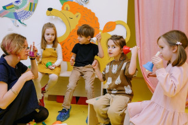
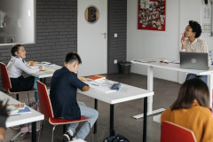

Colégio Inova
O colégio inovador
O colégio inovador
O Colégio I-Nova tem como proposta a educação na fase da alfabetização por meio de jogos e atividades lúdicas. Desenvolvemos nossos próprios jogos e utilizamos outros jogos educativos para compor o nosso currículo.
Em nossa escola visamos analisar o aluno desde o princípio, com um olhar individualizado para cada estudante e pensando sempre nas propostas de aprendizagem voltadas para promover melhores resultados de acordo com as dificuldades anteriormente apresentadas, respeitando claro o tempo de cada criança. Acreditamos que assim como em as plantas precisam de tempo, solo propício, água e cuidados, com nossas crianças precisamos de um processo semelhante para ajudá-las a avançar. Nossa equipe escolar é preparada e treinada adequadamente para ajudar a futura geração a construir o conhecimento e adquirir através de trocas bagagens inigualáveis.
